Spielosophie auf dem C 64
Für keinen anderen Computer gibt es eine so unglaublich große Auswahl an Spielen wie für den C 64. Grund genug, einmal die Spielentwicklung zu resümieren und Ihnen wichtige Tips für den Spielekauf zu geben.
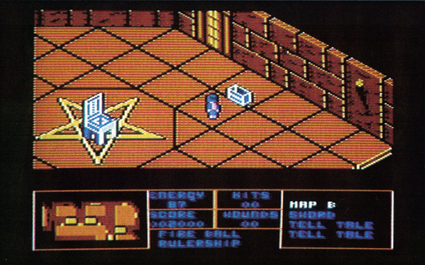
Auf dem Gebiet der Spielesoftware ist und bleibt der C 64 ein Phänomen, das in der gesamten Computerbranche seinesgleichen sucht. Für jeden Geschmack gibt es dabei etwas zu holen. Die Palette reicht vom absoluten Billigspiel für 9,80 Mark bis in Preisklassen von 200 Mark und manchmal sogar mehr. Wobei man in letzter Zeit vor allem unter den Billigangeboten eine deutliche Qualitätssteigerung verbuchen kann. Der Preis kann also schon lange nicht mehr als Bewertungskriterium für ein gutes Spiel herangezogen werden. Kann man überhaupt im voraus absehen, ob ein Spiel wertvoll und auf dem Weg ist ein Klassiker zu werden? Schwierig ist dies vor allem für die C 64-Besitzer, die sich nur nebenbei mit Spielen beschäftigen und auch nur dann einmal ein Spiel kaufen, wenn Sie abschätzen können, daß es sich dabei nicht um einen Flop handelt. Wir wollen Ihnen daher im weiteren Anhaltspunkte zur Bewertung von Spielen geben, die es Ihnen ermöglichen, Fehlkäufe auszuschließen. Dazu beschränken wir uns hier auf einen Überblick über Action-Spiele und Adventures. Für andere Spielegattungen wie zum Beispiel Strategiespiele, Simulationen oder Rollenspiele gilt ähnliches.
Spiele für Jung und Alt
Es gibt sie bereits seit längerer Zeit, die Spieledesigner, die für renommierte Softwarefirmen mit nichts anderem beschäftigt sind, als ständig nach neuen Spielideen zu suchen und diese in Programmkonzepte umzusetzen. Programmierarbeit übernehmen Sie dabei oftmals nur in geringem Umfang; die Konzepte werden in Teamarbeit von anderen auf den jeweiligen Computertyp ausgelegt. Prominenter Vertreter hierfür ist zum Beispiel Paul Reiche III als Designer bei Electronic Arts. Neue Trends abzusehen scheint gerade in der schnellebigen Computerbranche unwahrscheinlich schwierig. Doch daß es auch auf dem Spielesektor immer noch Neues zu entdecken gibt, muß man bejahen. Gerade solche Spiele, die Computer-Besitzer aller Altersklassen begeistern können, werden Erfolg haben. Erstens wird der Käufer eines solchen Spiels auch später immer wieder gerne darauf zurückgreifen. Zweitens können Mitspieler anderer Altersstufen auch sofort für das Spiel Begeisterung oder zumindest Verständnis aufbringen. Letzteres gilt ganz besonders für Jugendliche, die oftmals versuchen auch ihren Eltern einmal die Qualitäten des eigenen Computers verständlich zu machen. Den großen Erfolg von Sportspielen (Bild 1) und vielen Kampfspielen (Bild 2) kann man so durchaus erklären. Das Spielprinzip ist praktisch aus dem Leben gegriffen und sofort für jeden verständlich.
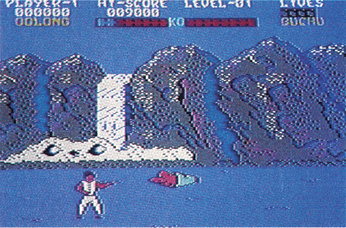
Spiele aus der Halle
Einer der großen Trends in der Spieleproduktion der letzten Zeit war die Adaption von Spielhallenhits. Dabei wird ein erfolgreiches Automatenspiel einfach auf einen kleineren Computer umgesetzt. Dies ist für die Softwarefirmen eine zunächst scheinbar einfache Möglichkeit zu einem guten Spiel zu kommen. Bei Spielautomaten läßt sich anhand der Menge der eingeworfenen Münzen ersehen, wie gut das Spiel angekommen ist. Also wird davon ausgegangen, daß auch die Umsetzung für den Heimcomputer entsprechend erfolgreich wird. Da für die Rechte an solchen Spielen von den Automatenherstellern meist Unsummen verlangt werden, findet sich die Softwarefirma sogleich in einem Dilemma: Wieviel muß man noch in das Projekt investieren, um einen Ausgleich zwischen Preiswürdigkeit und Attraktivität eines Spiels zu behalten. Selbst eine Umsetzung auf andere Computertypen kostet noch Zeit und erhebliche Programmierarbeit. Letztendlich können und möchten viele potentielle Käufer für eine noch so gute Umsetzung nicht zuviel ausgeben. Daher kommt es zu Schnellproduktionen, die oft die gesamte Faszination des Spielhallenoriginals vermissen lassen und außer dem Namen nichts mehr mit diesem gemeinsam haben.
Die Qualität einer Programmierarbeit hängt im wesentlichen vom Talent und Wissen des Programmierers und auch von der Zeit ab, die er zum Erstellen des Projektes zur Verfügung hat. Nur so läßt sich erklären, daß trotz einer guten Idee und originellem Spielprinzip manche Spiele einfach keinen Spaß machen. Projekte mit einem noch so vielversprechenden Namen müssen sich erst einmal auf dem jeweiligen Computer beweisen. Mit Vorschußlorbeeren sollte man also vorsichtig umgehen.
Des Spielers Frust
Eine bessere Umsetzung aus der Spielhalle als Marble Madness für den Amiga wird man zur Zeit auf dem Markt kaum finden, und auch für den C 64 gibt es inzwischen eine gute Version (Bild 3). Der Commodore 64 braucht sich nicht hinter größeren Computern zu verstecken. Es gibt genügend Spielehits, die ausschließlich für den C 64 programmiert wurden und auch inzwischen gute Adaptionen von »Coin up«-Klassikern. Man denke nur an den letztlich erschienenen Hit »Ghost'n Goblins« (Bild 4). Doch hier kommt ein weiteres Problem auf. In der Spielhalle wird natürlich versucht, den Spieler nicht zu lange am Joystick zu lassen, damit er öfter in die Versuchung kommt, weiteres Geld nachzuwerfen. Man will ja schließlich etwas an dem teuren Automaten verdienen. Der Schwierigkeitslevel ist zum Teil enorm hoch und Spielmöglichkeiten, sprich Männchen oder ähnliches, hat man meist viel zu wenig. Doch wieso muß dies bei Adaptionen auf einem Heimcomputer, ja sogar bei dem größten Teil der auf dem Markt befindlichen Action-Spiele genauso sein. Es ist unglaublich frustrierend, wenn der Käufer eines Spiels, der dafür sein gutes Geld ausgegeben hat, niemals die Chance hat auch nur eine Szene aus höheren Leveln des Spiels zu sehen, geschweige denn zu spielen. Anders läßt es sich nicht erklären, daß es eine unglaubliche Nachfrage an Spiele-POKEs und Hilfen für solche Spiele gibt. Während man bei den Besuchern einer Spielhalle davon ausgehen kann, daß es sich um wirkliche Spielefreaks handelt, die bereit sind auch mehr Geld für diese Art von Spielen auszugeben, kann dies doch nicht für den Großteil der C 64-Besitzer ebenso gelten. Man kann nur mit Wehmut an solche Spieleklassiker wie zum Beispiel »Jumpman« von Epyx zurückdenken (Bild 5). Bei welchem Spiel gibt es heute noch genügend Männchen zum Einstieg, anwählbare Schwierigkeitslevel und eine Highscore-Liste, die sich auf Diskette speichern läßt. Dabei wird beim Jumpman sogar hinter jeder Eintragung vermerkt in welchem Schwierigkeitslevel gespielt wurde. Da macht es auch Anfängern Spaß, wenn sie die ersten Eintragungen sehen, und die Freaks können sich immer noch entsprechend behaupten und ausweisen.
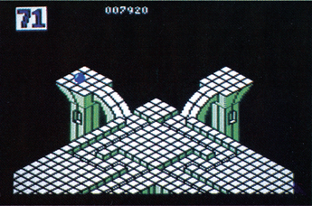
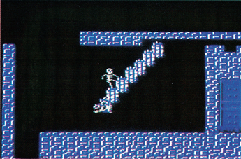
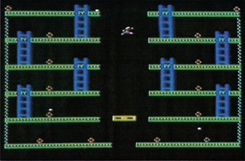
Ein anderer wichtiger Punkt bei der Bewertung eines Spiels ist die Steuerbarkeit über das jeweilige Eingabeinstrument. Im Fall eines Action-Spiels ist dies normalerweise der Joystick, obwohl es auch Ausnahmen gibt. Doch dazu später noch mehr. Bei Spielen, die neu auf den Markt kommen, unterliegt man schnell dem Reiz einer zum Beispiel noch nie gesehenen Grafik oder ungewöhnlichen Spielidee. Es lohnt sich jedoch auf jeden Fall gerade bei Action-Spielen einmal den eigenen Joystick mit ins Geschäft zu nehmen und direkt am Programm anzutesten, wie es sich damit steuern läßt. Was nützt einem die schönste Grafik oder der beste Sound, wenn die Joystickabfrage der dafür zuständigen Programmroutine derartig langsam ist, daß vernünftiges Spielen nicht möglich wird. Dies Beispiel ist zwar ein Extremfall, allerdings muß man immer wieder bemerken, daß auch neuere Programme ihr Spielkonzept nicht auf eine entsprechende Weise in der Steuerung der Spielhandlung umsetzen oder verwirklichen können. Läßt sich das Spiel unter einer realen Testsituation am eigenen Joystick einwandfrei bedienen, so daß zum Beispiel auch Steuerungen im 45-Grad-Winkel vom Joystick entsprechend umgesetzt werden, dann kann man sicher sein, in dieser Hinsicht keinen Fehlkauf zu tätigen. Unterbewußt wird vom Spieler oft der gesamte Frust über die Schwierigkeit eines Spiels auf die Idee selbst geschoben, dabei hätte eine passendere Joystickabfrage diesen Frust nie aufkommen lassen und den Spielspaß entsprechend gesteigert.
Kann man diese Bewertungen nun auch auf andere Spielegattungen übertragen? Genauer gesagt, was muß man bei Adventure-Spielen beachten, wenn man dort eine objektive Bewertung vornehmen will?
»Adventurologisch«
Sollten Sie zu denjenigen gehören, die sich gerne in die Rolle anderer Personen hineinversetzen und dann knifflige Rätsel lösen oder heldenmutige Taten vollbringen möchten, so brauchen Sie dazu nicht mehr als ein gutes Adventure, welches Ihren Ansprüchen gerecht wird. In einem Abenteuerspiel können Sie dies alles und noch viel mehr nur von der Tastatur Ihres Computers aus. Dabei muß man sich am besten völlig in das sogenannte Alter Ego hineinversetzen. Je besser die neue künstliche Welt des Adventures ausgestaltet ist, um so besser kann man die Aufgaben, die gestellt werden, bewältigen. Doch noch mehrere andere Faktoren bestimmen im wesentlichen die Qualität eines Abenteuerspiels.
Um den Kern des Spielprinzips bei einem Adventure erfassen zu können, wollen wir zuerst versuchen andere Spiele aufzuführen, die nicht unter diese Kategorie fallen. So läßt sich leichter eingrenzen, worüber wir im folgenden reden wollen.
Was ist überhaupt ein Adventure?
Spiele, die ausschließlich mit dem Joystick zu bedienen sind und die dem Spieler Reaktionen in Realzeit abfordern, gehören sicherlich nicht in diese Kategorie. Doch wie stuft man die in letzter Zeit zunehmend auf dem Markt aufgetauchten sogenannten Action-Adventures ein oder was ist mit den Textabenteuern, die Spielpassagen haben, die in Realzeit ablaufen? Zur Verdeutlichung hier nur ein paar Beispiele, die diese Abgrenzung extrem schwierig machen. »Wizardry« ist eines der Action-Adventures, bei dem man die Hauptperson mit dem Joystick durch mehrere Bilder bewegen kann, um an verschiedenen Stellen aufgesammelte Gegenstände sinnvoll an anderen Plätzen anzuwenden (Bild 6). Nicht wie bei reinen Action-Spielen wird man ständig von einem Level in den nächst schwierigeren gehetzt, sondern auch alte Räume, die man schon gesehen hat, müssen wieder besucht werden. Nur so kann die gestellte Aufgabe bewältigt werden. Bei Fantasy-Rollenspielen wie »Ultima« wird die Spielfigur nicht einmal mehr mit dem Joystick bewegt, sondern nur noch durch entsprechende Richtungsangaben auf der Tastatur. Auch müssen zum Beispiel bei Ultima IV (Bild 7) relativ viele Wörter, ja ganze Sätze eingetippt werden, damit man sich mit anderen Spielfiguren regelrecht unterhalten kann. Zuletzt noch einige Abenteuer, die hauptsächlich die Texteingabe verlangen und doch aus der Reihe fallen: Wer zum Beispiel bei »Critical Mass« nicht schnell genug reagiert, um aus dem Fahrstuhl zu springen, wird sicher den Spielertod sterben. Oder bei »Dragonworld« wo man sich das Geld für den weiteren Spielverlauf in einem kleinen Geschicklichkeitsspiel verdienen muß (Bild 8). Außerdem: Wer sich in einem echten 3D-Labyrinth nicht zurechtfindet, kann bei »Asylum« gleich aufgeben (Bild 9). Solche Grenzfälle erhöhen oftmals erheblich den Spielspaß, weil sie etwas Neues bringen, und in absehbarer Zeit wird davon noch einiges auf uns zukommen. Im folgenden wollen wir daher von einem Adventure sprechen, wenn diese Punkte erfüllt sind:
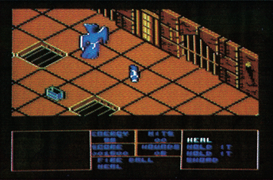
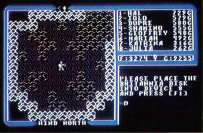
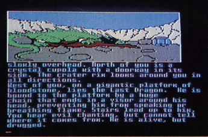
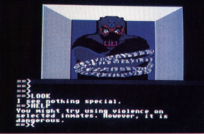
— die Spielsteuerung erfolgt zum überwiegenden Teil durch Texteingabe auf der Tastatur;
— man kann sich durch die verschiedenen Räume eines imaginären Spielfeldes »frei« bewegen. Natürlich immer in Abhängigkeit von der momentanen Spielsituation, das heißt verschlossene Türen müssen erst geöffnet werden, bevor man in den nächsten Raum gelangt;
— der Spieler hat Zeit zum Lösen von kniffligen Aufgaben;
— das Spiel ist nicht in einer Sitzung zu lösen;
— eine Möglichkeit zum Speichern des Spielstandes muß vorhanden sein.
Nachden wir so das Adventure erfolgreich definiert haben, fallen die eben erwähnten Spiele Asylum, Dragonworld oder Critical Mass unbedingt in diese Kategorie. Auch wenn viele Hersteller mit dem Begriff Adventure für ihre Spiele werben, was ihnen nicht abgeschlagen werden kann, so sagt dies also im Endeffekt noch nichts darüber aus, um was für eine Art Spiel es sich tatsächlich handelt.
Wie sag ich's meinem Computer
Wie kann man als potentieller Käufer eines Adventures nun eine Bewertung vornehmen? Welche Punkte nehmen, abgesehen von der Spielidee, Einfluß auf die Qualität des Adventures? Der Parser eines Abenteuerspiels, also der Programmteil, der die Texteingaben des Spielers auswertet, ist zum Beispiel von zentraler Bedeutung für den Spielfluß. Er läßt sich im Zusammenhang mit der Tastatureingaberoutine im wesentlichen unter zwei Gesichtspunkten betrachten:
Ist das Programm so aufgebaut, daß es die getippten Eingaben des Spielers schnell genug aufnehmen und auch auswerten kann? Es kommt bei einem noch so spannenden Adventure wenig Spielspaß auf, wenn man beim Eintippen der Kommandos ständig kontrollieren muß, ob auch tatsächlich alle Buchstaben vom Programm akzeptiert wurden, das heißt auf dem Bildschirm angezeigt werden. Schnelltipper werden natürlich von einem langsamen Parser mehr benachteiligt wie Einsteiger. Allerdings steigert man aus Erfahrung gerade beim Adventurespielen die Tippgeschwindigkeit. Dies ist ein Problem, welches ausschließlich auf die Programmierarbeit des Autors zurückzuführen ist. Hat er eine gute Programmroutine geschrieben, die in Maschinensprache arbeitet, so wird er damit auch auf dem C 64 noch jeden Schnelltipper zufriedenstellen. Gleich unzufrieden dürften aber Einsteiger und Fortgeschrittene über eine zu langsame Satzauswertung des Computers sein. Ein Adventure ist so angelegt, den Spieler stundenlang, und das über Tage und Wochen, an der Tastatur zu beschäftigen, da kann ein zu langsam arbeitender Parser schon zur Tortur werden. Dies liegt auch daran, daß manche Adventure einen enormen Sprachschatz haben und daher oft auf Diskette zugreifen müssen, und das kann bei der normalen Floppy 1541 bekanntlich etwas mehr Zeit in Anspruch nehmen. Hier hilft also nur ein Floppyspeeder, sei er nun im Programm enthalten oder als Hardware vom Benutzer zusätzlich installiert. Vor dem Kauf eines Programms sollte man sich als Käufer daher schon einmal ins Geschäft bemühen, um sich über diesen Punkt durch einen konkreten Test am Produkt zu informieren.
Intensiver muß man sich mit einem Adventure auseinandersetzen, wenn man auch über den nächsten Punkt Klarheit haben möchte. Und das ist bei einer Testssituation im Geschäft relativ schwierig. Die zweite Frage ist nämlich: Wie intelligent ist der Parser und wieviel Wörter versteht er? In einem gut dokumentierten Programm ist vielleicht in der Anleitung vermerkt wieviele Wörter der Parser kennt oder sogar welche genau. Doch bei den meisten Programmen müßte man schon mit einer Hilfe, sei es nun ein Maschinensprache- oder ein Diskettenmonitor, in das Programm hineinschauen, um genau zu erfahren, was tatsächlich an Vokabeln verstanden wird. Hier hilft sonst nur noch ein Test des Spieles aus der 64'er oder Erfahrungswerte mit ähnlichen Abenteuern derselben Art. Im Prinzip kann man in diesem Zusammenhang nämlich davon ausgehen, je komplexer der Parser ist, um so mehr Spaß macht es das Adventure zu spielen. Es gewinnt durch den steigenden Wortschatz an Realitätsnähe.
Text oder Grafik?
Ob Sie bei einem Adventure nur mit Text auskommen oder auf eine grafische Ausgestaltung nicht verzichten wollen, hängt ganz von Ihrem persönlichen Geschmack ab. Bezüglich der Bewertung des Programms sei hier nur noch soviel dazu gesagt. Bei einem ausschließlich auf Text beschränkten Adventure sollte man sich in der jeweiligen Sprache des Parsers auf jeden Fall gut auskennen. Es gibt zwar auch schon gute deutsche Textabenteuer, man denke nur an das hervorragende und inzwischen sogar ins Englische übersetzte »Lapis Philosophorum« (Bild 10). Allerdings ist der Großteil an derartiger Software immer noch ausschließlich in englischer Sprache erhältlich. Reine Textadventure, dessen bekanntester Produzent immer noch die amerikanische Softwarefirma Infocom ist, bieten jedoch immer noch den größten Wortschatz und meist auch die größere Anzahl von gut ausgestalteten Räumen und Spielsituationen. Die Grafik frißt demgegenüber relativ viel Speicherplatz, sei es nun im Computer oder auf Diskette. Allerdings ermöglicht sie auch eine bildhafte Orientierung und, sofern sie gut gemacht ist, eine stimmungsvollere Ausgestaltung des Abenteuers. Viele Adventure sind daher auf mehrere Diskettenseiten verteilt, um sowohl viel Text als auch entsprechende Grafik zu enthalten (Bild 11). An Komplexität und Variabilität des Spielverlaufs waren die letzten Tellarium Adventure zum Beispiel kaum zu überbieten, während der Spielkomfort bei »Borrowed Time« aufgrund ausgefeilter Bildschirmaufteilung und Menütechnik eine neue Dimension erhielt (Bild 12). Zur Zeit stellt jedoch das Adventure »The Pawn« auf dem C 64 einen neuen Standard dar, was die Grafik sowie auch die Komplexität des Parsers betrifft. Lesen Sie bitte genaueres dazu im Spieletest in dieser Ausgabe. Was man in Zukunft auf dem Adventure-Sektor an weiteren Neuigkeiten erwarten kann, sind zum Beispiel animierte Grafiken sowie 3D-Rundumdarstellungen der Szenen. Dem Einfallsreichtum der Programmierer sind also auch hier noch lange keine Grenzen gesetzt.
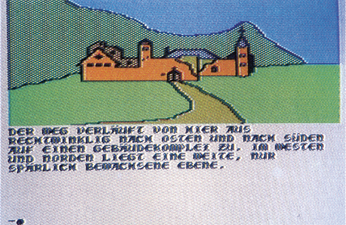
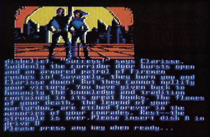
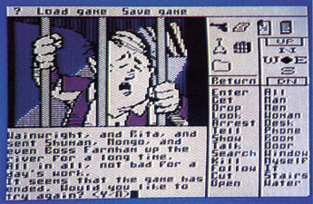
Resümee
Die rasend schnelle Entwicklung des Computermarktes findet, wie sollte es anders sein, auch auf dem Spielesektor entsprechenden Niederschlag. In nächster Zukunft wird auch auf 8-Bit-Heimcomputern die Verbindung zweier Computer über die RS232-Schnittstelle zum simultanen Spielen zu erwarten sein. Für einige Spiele auf 16-Bit-Computern ist dies bereits verwirklicht. Zwei Spieler können sich dabei im selben Spiel gegenüberstehen, obwohl sie in Wirklichkeit hunderte von Kilometern voneinander entfernt sind. Auch an einer für Heimcomputer revolutionären Verbesserung der Bildqualität wird schon gearbeitet. Die Verbindung von Videogerät und Computer wird dies laut Vorstellungen der Entwicker einmal übernehmen.
Egal welche erstaunlichen neuen Entwicklungen noch auf uns zukommen, falls Sie selbst in die Situation kommen für sich oder andere ein Spiel zu bewerten, wird Ihnen dieser Artikel hoffentlich eine Hilfe gewesen sein. Mit Vorschußlorbeeren aufgrund von Titeln, Spielhallenbekanntheitsgrad oder Gerüchten aus der Szene sollte dabei allerdings sehr vorsichtig umgegangen werden. Nützlich kann es daher vor einem Kauf schon sein einmal in die Spieletests aus der 64'er oder unserer Schwesterzeitschrift Happy-Computer zu sehen. So lassen sich Fehlkäufe eher ausschließen. Versuchen Sie aber wenn möglich auf jeden Fall vorher durch einen Test am Produkt herauszufinden, ob das jeweilige Spiel Ihnen zusagt. Ansonsten haben Sie hoffentlich durch diesen Artikel mal wieder Lust bekommen sich richtig Zeit für ein Spiel zu nehmen und ausgiebig zu spielen. Nur wie gesagt, ein gutes muß es sein!
(jk)